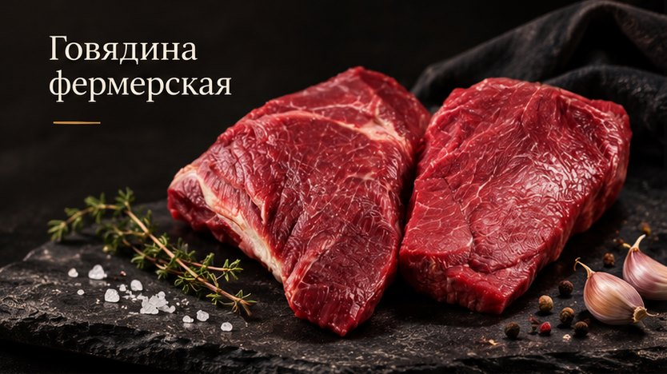
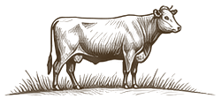
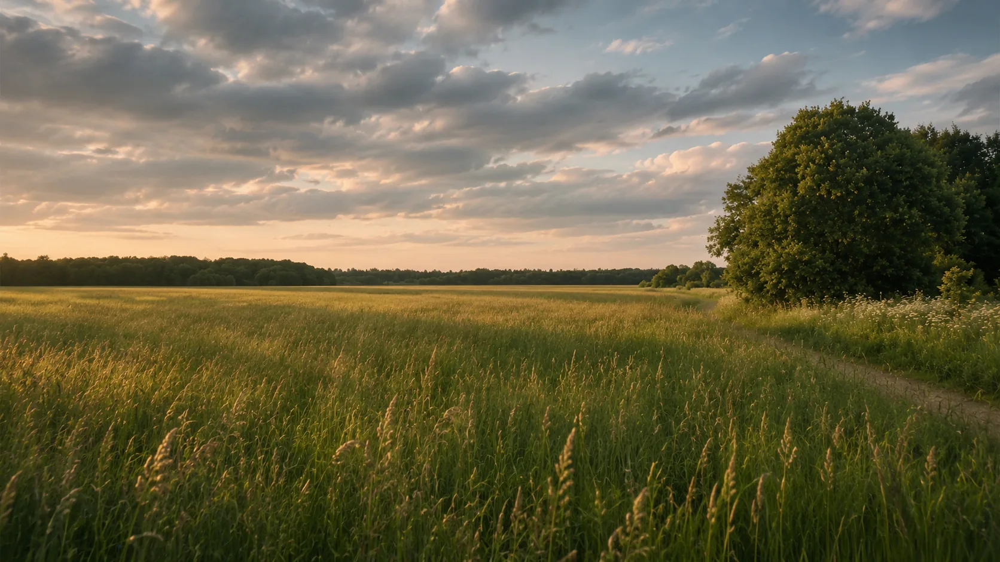
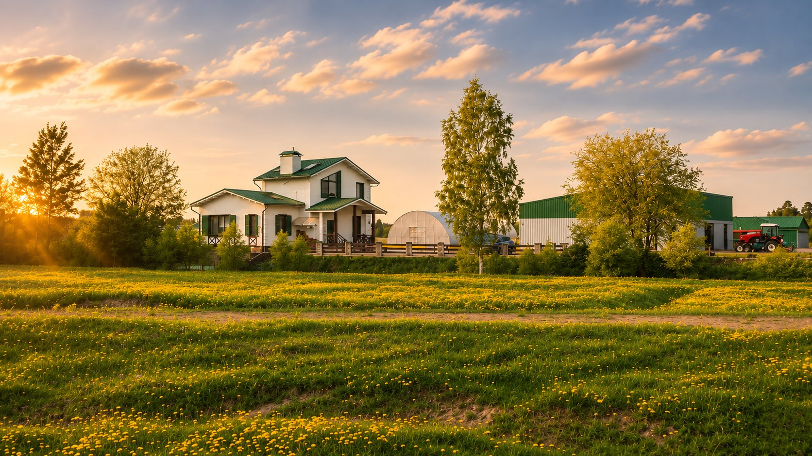
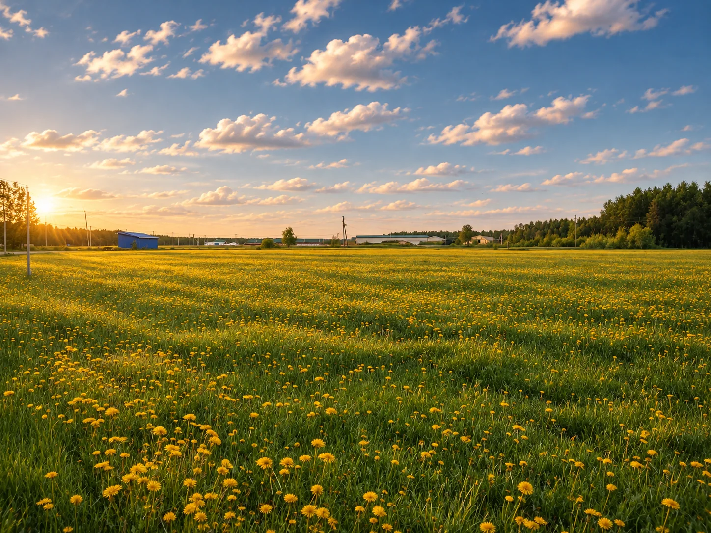
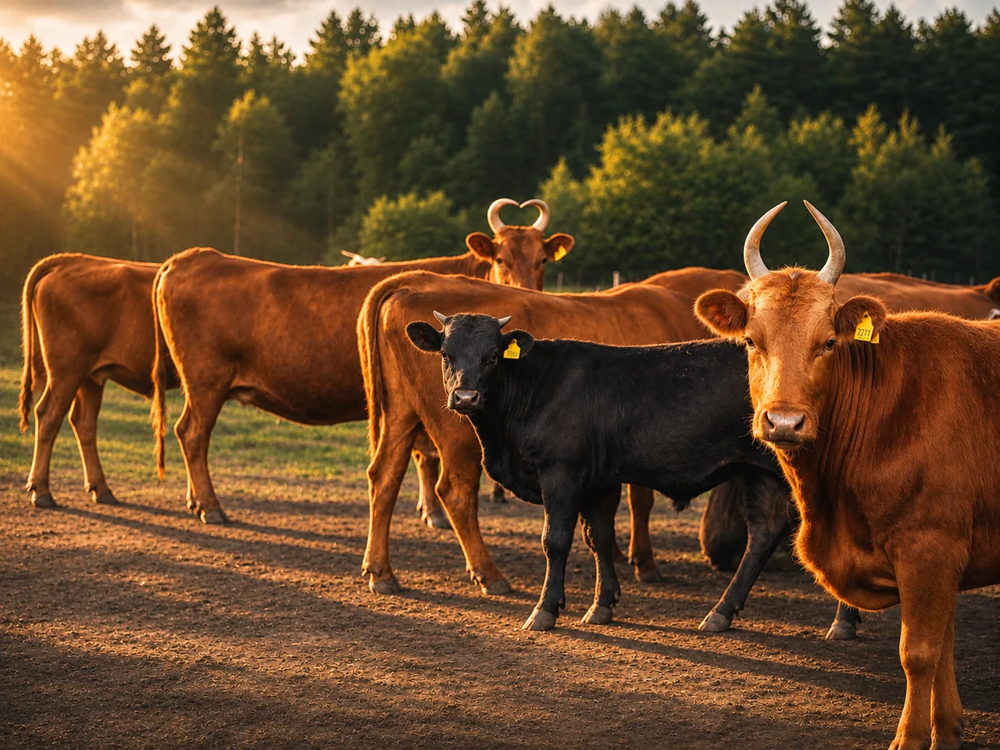
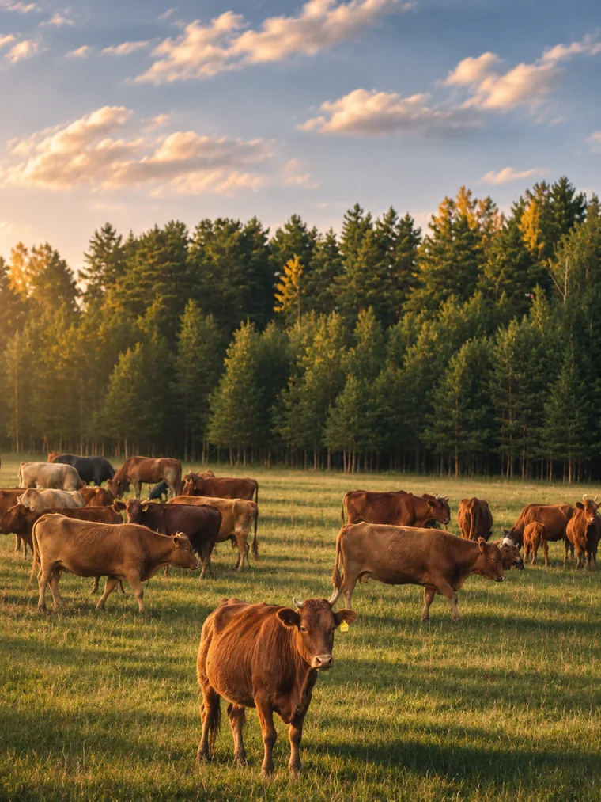

Говядина фермерская
У говядины собственного хозяйства умеренная жирность и выразительный вкус. Как во флорентийском стейке из тосканской кьянины, его раскрывают подходящий отруб, правильная жарка и щепотка соли.

РОГОВОЭКОФЕРМАЭкоферма в верховьях Волги
Своя земля. Своё стадо. Настоящий вкус.
В верховьях Волги, среди лесов и лугов Тверской области, мы выращиваем мясной скот на собственных пастбищах и создаём продукты из своей говядины.
О хозяйстве
НАША ИСТОРИЯ
Хозяйство в деревне Рогово начали с нуля. Из Калмыкии привезли сто коров, привычных к жизни в открытой степи. Со временем из небольшого стада вырос агрокомплекс со своими полями, пастбищами, кормовой базой и цехом продуктов из говядины.
Сегодня в стаде около 1 200 животных. Мы держим такой масштаб, чтобы своих земель хватало для травяного кормления, а каждый этап оставался под нашим контролем. За этой работой — более двухсот лет совокупного опыта команды.


НАША ЗЕМЛЯ
В верховьях Волги леса чередуются с лугами. Рогово находится вдали от крупных городов и промышленных центров, примерно в семидесяти километрах от истока Волги. Летом стадо кормится на лугах, а на зиму мы заготавливаем травяные корма на своих угодьях.
Мы отказались от интенсивного зернового откорма: пшеницу, кукурузу и комбикорма для ускоренного откорма здесь не используют. Поля удобряем собственным навозом и высеваем культуры, которые помогают поддерживать плодородие почвы.
НАШЕ СТАДО
В основе нашего стада — калмыцкая порода. В открытых степях, среди ветров и холодных зим, сформировались её выносливость, крепкое здоровье и способность жить на выпасе. Эти качества и определили наш выбор.
В селекционных опытах мы сочетали калмыцкую породу с ангусами и лимузинами, чтобы изучить качества мясных пород и понять, какие сочетания подходят нашим условиям. В создании опытных участков хозяйства участвовали специалисты Тимирязевской академии и Института почв имени Докучаева.

СОБСТВЕННОЕ ПРОИЗВОДСТВО
Ферма и цех находятся в одной деревне. Мы выращиваем корм, содержим мясное стадо и сами готовим продукты из говядины. Свой цех позволяет связать эти этапы и отвечать за сырьё и готовый продукт.

ГАСТРОНОМИЯ РОГОВО
Характер мяса складывается из породы, возраста, условий выращивания и рациона. Травяной откорм даёт говядине узнаваемый аромат и чуть «дикий» вкус. Наряду с мраморностью, которую часто ценят в мясе зернового откорма, важны вкус и структура волокон.
Пищевая ценность. Говядина — источник полноценного белка, железа, цинка и витаминов группы B.
Разные отрубы. У каждого своя текстура: одним подходит быстрая жарка, другим — томление, третьи дают насыщенный бульон.